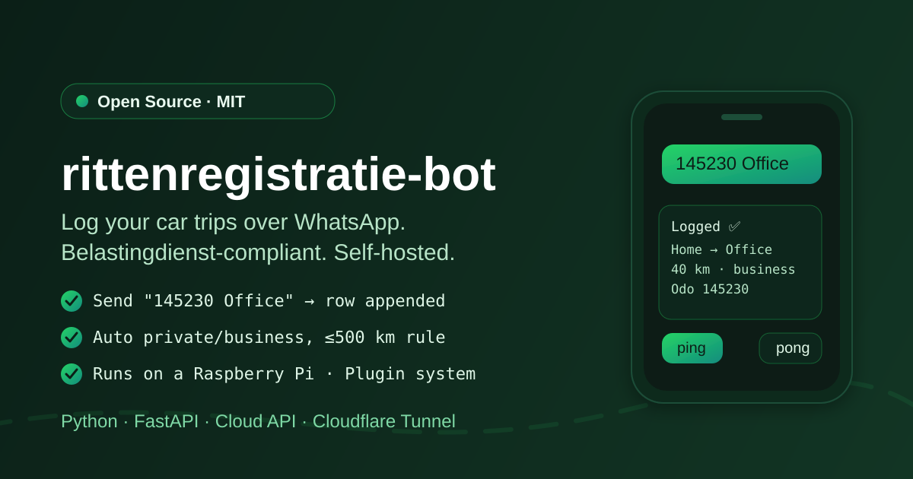
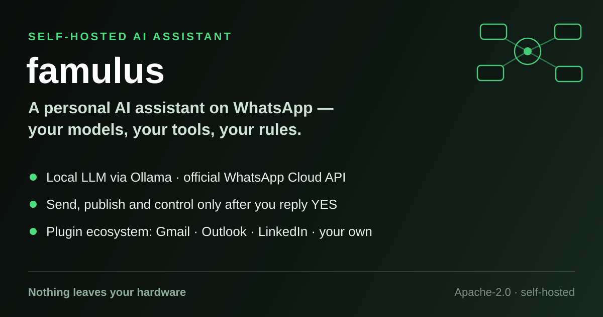
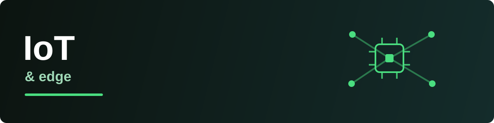
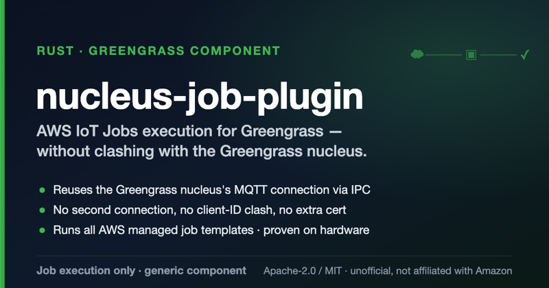
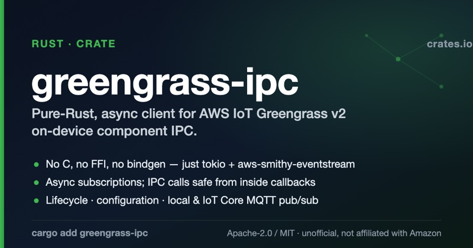
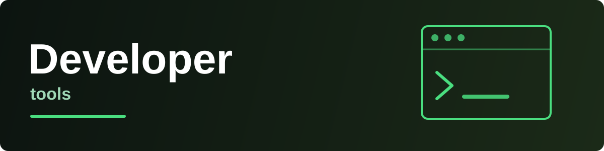
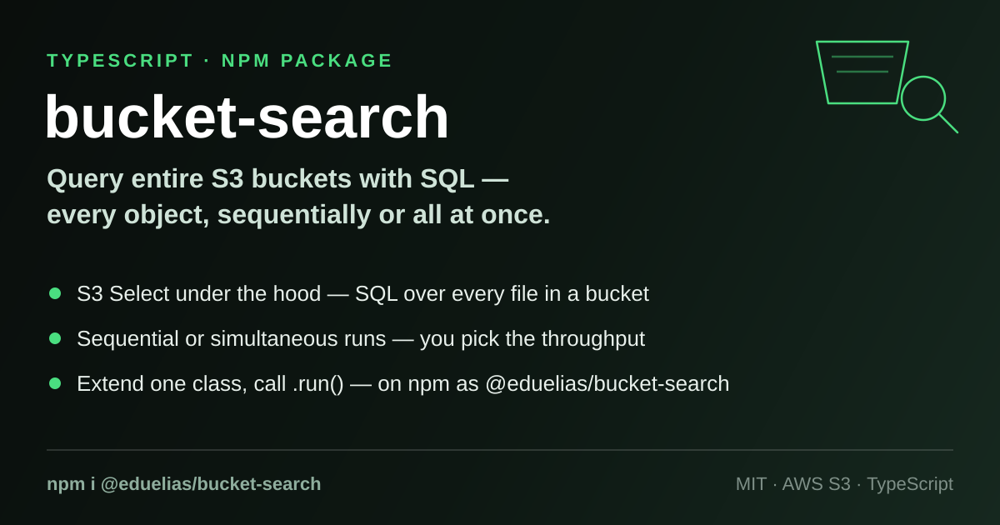
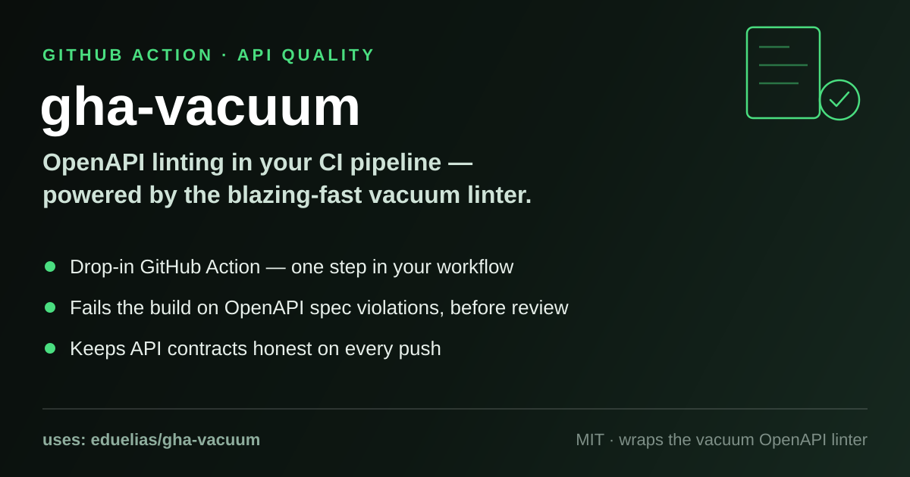
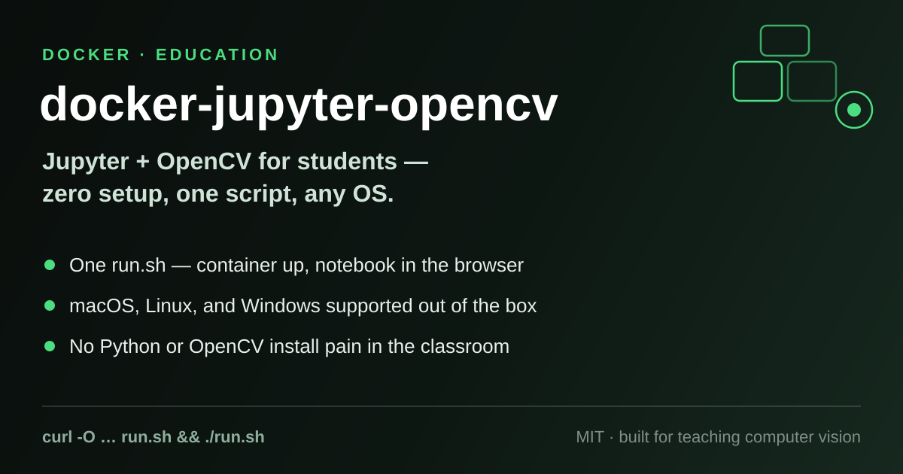

Du7 Technology Services
Pragmatic engineering for infrastructure, cloud, and IoT — from Raspberry Pi to AWS.
Automation & assistants

rittenregistratie-bot
A self-hosted WhatsApp bot that keeps a Belastingdienst-compliant trip log for one or more cars. Send an odometer reading and destination; it appends an audit-ready row to a per-year Excel file and replies with a summary. Runs comfortably on a Raspberry Pi.

famulus
A self-hosted personal AI assistant reached over WhatsApp, running on your own hardware: a local LLM through Ollama, web search via your own SearXNG, and a plugin ecosystem for Gmail, Outlook and LinkedIn. Anything that sends, publishes or changes state waits for your explicit confirmation first.
IoT & edge


nucleus-job-plugin
An unofficial Rust runner for AWS IoT Jobs on Greengrass devices. Picks up queued jobs, runs allow-listed handlers, and reports status back to the cloud — reaching IoT Core through the nucleus's own connection, as a standalone generic component.

greengrass-ipc
A pure-Rust, async client for AWS IoT Greengrass v2 component IPC. No C, no FFI — just tokio and typed operations, including ones the official bindings are missing. Safe to call from inside subscription callbacks, where the official SDK is not.
Developer tools


bucket-search
An npm package that runs SQL queries across entire S3 buckets using S3 Select —
file by file or simultaneously. Extend one class, call .run(). Published
as @eduelias/bucket-search.

gha-vacuum
A GitHub Action that runs the vacuum OpenAPI linter on your specs in CI — failing the build on contract violations before they ever reach code review.

docker-jupyter-opencv
A zero-setup Docker container with Jupyter and OpenCV, built for students — run one script and the notebook is in your browser, on macOS, Linux, or Windows.